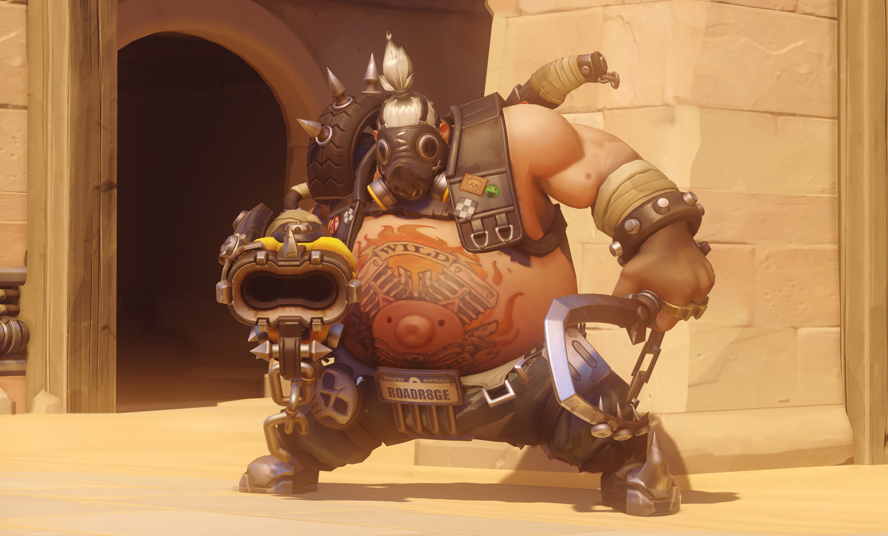

hero gallery
Mcree
Real Name Jesse McCree. Age 37/ Nationality USA American/ Occupation Bounty Hunter/ Base Santa Fe, New Mexico, USA/ Affiliation Overwatch (formerly) Blackwatch (formerly)/ Voice Matthew Mercer/ Role Offense/ Health 200/
hanzo

Age 38/ Nationality JapanJapanese/ Occupation Mercenary, Assassin Base Hanamura, Japan (formerly)/ Affiliation Shimada Clan (formerly)/ Relations Sojiro Shimada (father) Genji Shimada (younger brother)/ Voice Paul Nakauchi[2] (English) Lionel Tua (French) Bernd Vollbrecht (German) Lorenzo Scattorin (Italian) Shuhei Sakaguchi (Japanese) Reginaldo Primo (Brazilian Portuguese) Dan Osorio (American Spanish) Miguel Ángel Montero (European Spanish) Liu Beichen (Mandarin(China)) Kang Dian-Hong (Mandarin(Taiwan))/ Role Defense/ Health 200/
roadhog
Real Name Mako Rutledge/Age 48/ Nationality New Zealand New Zealand (assumed as being an Australian)/ Occupation Enforcer (formerly) Bodyguard/ Base Junkertown, Australia (formerly)/ Affiliation Australian Liberation Front (formerly) Junkers (formerly)/ Voice Josh Petersdorf (English)/ [Expand] Role Tank/ Health 600/
mei
Real Name Mei-Ling Zhou (周美灵)/ Age 31 (biological)[1]/ approx. 40 (chronological)[2] Nationality ChinaChinese Occupation Climatologist, Adventurer Base Xi’an, China (formerly)/ Affiliation Overwatch (formerly)/ Voice Elise Zhang (English) [Expand]/ Role Defense/ Health 250/
pharah

torbjörn

Real Name Torbjörn Lindholm/ Age 57/ Nationality SwedenSwedish/ Occupation Weapons designer/ Base Gothenburg, Sweden/ Affiliation Ironclad Guild (formerly) Overwatch (formerly)/ Relations Wife Eight children/ Voice Keith Silverstein (English)/ Role Defense/ Health 200/
Ana
Real Name Ana Amari/ Other Names Horus Shrike Status Active/ Age 60/ Nationality EgyptEgyptian/ Occupation Sharpshooter (formerly) Overwatch second-in-command (formerly) Bounty hunter/ Base Cairo, Egypt/ Affiliation Egyptian security forces (formerly) Overwatch (formerly)/ Relations Fareeha Amari (daughter)/ Voice Aysha Selim (English)/ Role Support/ Health 200/
genji

Real Name Genji Shimada (島田源氏)[1] Other Names Sparrow/ Age 35/ Nationality Japan Japanese/ Occupation Adventurer/ Base Hanamura, Japan (formerly) Shambali Monastery, Nepal (formerly)/ Affiliation Shimada Clan (formerly) Overwatch (formerly) Blackwatch (formerly)/ Relations Sojiro Shimada (father) Hanzo Shimada (older brother)/ Voice Gaku Space [2][3] (English)/ Role Offense/ Health 200/